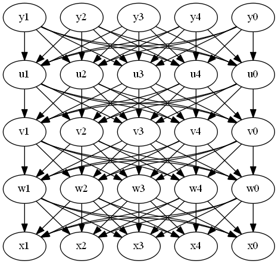
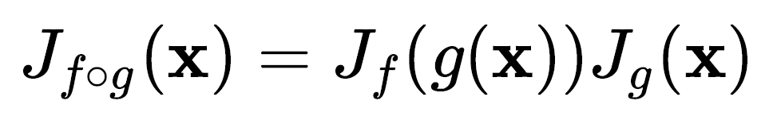

复杂多元复合函数的导数和雅克比矩阵
文章目录
我们知道对于复合函数的导数，可以使用链式法则求得。对于多元的复合函数来说，也可以用同样的方法求得梯度或者雅克比矩阵，但是如果复合函数涉及到的变元比较多，并且复合的层数也比较多，这样复杂度就会大大增加。
假设存在一个函数由M个函数复合而成，每一个函数作用在N个变量上，也就是每个函数为，在求F某个因变量对某个自变量的总的导数时，需要涉及到中间函数的所有的求导链路，也就是说复杂度接近于，这还只是单个因变量对单个自变量的求导，对于梯度和雅克比矩阵则更加复杂。比如说，，其中y,u, v, w,x都是维度为N的向量，需要求y1对于x1的导数，y1对x的梯度以及y对x的雅克比矩阵怎么求？要求得y1对x2的导数，需要计算出y1对每个u，每个u对每个v … 的导数，最后复合而成，这样的复杂度完全无法通过常规的链式求导实现。当然实际中，上述情况比较少见，但是复杂的多元复合函数求雅克比矩阵还是经常要用到的。
一种方法是使用数值求导，但是数值求导会损失精度，另外如果变量维度比较多，计算量也比较大。实际上复合函数的求导不管简单还是复杂，其重要的地方在于，分析好自变量和因变量之间的关系，理清好求导的链路。对于上面的这个函数的求导，假如不画出求导链路，直接分析的话，那真是太复杂了！我之前遇到过类似的问题，每个函数的自变量和因变量都是640X480的图片（矩阵），转换成向量的话，维度为307200，并且求导表达式非常复杂，在求雅克比矩阵的时候完全是一团糟了。很多时候，即使意识到应该理清好求导链路，但是这个链路怎么画图来还是个问题，这里推荐graphviz，尤其是求导链路分析的时候，特别方便。如果我们把上面的函数每个变量画成节点，每个分步导数项画成边，其求导链如下

有着这个链路图，理论上是可以求出雅克比矩阵的，比如y1对v1的导数为：
同样的，每个变量的雅克比矩阵都可以求出来。但是这里的边数实在太多了，即使每个分步项求出来了，最后复合的时候都是个问题。如果仔细观察导数项，就会发现，其实每个函数的导数可以写成矩阵，比如 的导数可以表示成这样：
的导数可以表示成这样：
同样的，每个函数都可以写成以上形式，然后将两个矩阵相乘就可以得到对应的两个函数复合而成的函数的导数。这样，只要计算出每个函数的矩阵，最终的导数就很容易求了。
但是等等，Just One More Thing …，如果仔细看上面写出的矩阵就会发现，这不就是雅克比矩阵吗？是的，整个多元复合函数的求导过程可以表述成更简洁的形式：

也就是说，一个复合函数的雅克比矩阵是它的单个函数雅克比矩阵的乘积！如此复杂的过程竟然能够用这么简洁的方式表达，amazing！
文章作者 Lianera
上次更新 2017年01月04日